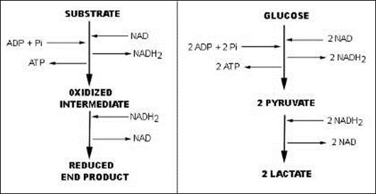

AMBE 101 :: Lecture 04 :: METABOLISM IN BACTERIA

Microbial Metabolism
Metabolism refers the sum of biochemical reactions required for energy generation and the use of energy to synthesize cellular materials.
The energy generation component is referred as catabolism and the build up of macromolecules and cell organelles are referred as anabolism.
During catabolism, the energy is changed from one compound to
another and finally conserved as high energy bonds of ATP.
ATP is the universal currency for energy. When energy is required for anabolism, it may be sent as high energy bonds of ATP which has the value of 8 kcal per mole.
Based on the source of carbon, the microbes can be divided into two groups namely, autotrophs and heterotrophs. Autotrophs utilize CO2 as sole carbon source and heterotrophs use organic carbon as sole carbon source.
I. Energy generation by heterotrophs
Heterotrophs use variety of carbon sources. Glucose is being the simple and wide variety of microbes prefers it. The glucose can be taken up by bacterium through diffusion and can be readily utilized. There are three possible pathways available in bacteria to use glucose. All these path ways are fermentative type and substrate level phosphorylation occurs.
- Embden-Meyerhof path way
- Phosphoketolase path way
- Entner – Doudoroff path way.
SUBSTRATE LEVEL PHOSPHORYLATION: (Fermentation)
The EMP pathway, phosphoketolase pathway and ED pathway end with one or two ATP synthesis by substrate level phosphorylation. There won’t be any external source of electron acceptor will come in these reactions.
A. Embden-Meyerhof path way
This is the path way of glycolysis most familiar and common to most of the organisms. The path way is operated by yeast to produce alcohol and lactic acid bacteria to produce lactic acid and several organic acids, gases, fatty acids, and alcohols. The path way is as follows:
Glucose à 2 pyruvate + 2 ATP + 2 NADH2
After pyruvate is formed, if the organism is a respirative type, the pyruvate will go to Krebs cycle and if the organism is fermentative, the reduction process ends with organic acids, alcohols etc.

A model fermentation:After an intermediate product, a reduction takes place in fermentation, whereas, if respiration, CO2 will be formed by complete oxidation through Krebs’s cycle
(Note: After pyruvate, the reduction process leads to fermentation and complete oxidation leads to respiration)
The Embden – Meyerhof path way can lead to a wide array of end products depending on the path ways taken in the reductive steps after the pyruvate formation.
The following are some of the such fermentations:
Fermentation |
End products |
Model organism |
Homolactic fermentation |
Lactic acid |
Lactobacillus |
Mixed acid fermentation |
Lactate, acetate, formate, succinate |
Enterobater |
Butyric acid fermentation |
Butric acid, acetone |
Clostridium acetobutylicum |
Propionic acid fermentation |
Propionic acid |
Propionibacterium |
Alcohol fermentation |
Ethanol |
Saccharomyces |
B. Phosphoketolase path way (Heterolactic path way)
The phosphoketolase path way is distinguished by the key cleavage enzyme phosphoketolase, which cleaves pentose to glyceroldehyde 3 phosphate and acetyl phosphate. The path way ends with ethanol and lactic acid. Ex. Lactobacillus, Leuconostoc. The overall reaction is,
Glucose à 1 lactate + 1 ethanol + 1 CO2 + 1 ATP
This path way is useful in the dairy industry for preparation of kefir (fermented milk), yogurt, etc.
C. Entner – Doudoroff pathway
Only few bacteria like, Zymomonas mobilis employ the ED pathway. The path way is as follows:
The overall reaction is
Glucose à 2 ethanol + 2 CO2 + 1 ATP
The alcohol productivity of Zymomonas is higher than yeast because of this fermentative pathway.
( Note : All the three pathways are end with 1 or 2 ATP by substrate level phosphorylation by means fermentation)
OXIDATIVE PHOSPHORYLATION (Respiration)
If the organism is a respiratory type (that means complete oxidation of glucose), it needs four essential metabolic components for their respiration and oxidative phosphorylation.
a. Tricarboxylic acid cycle (also known as citric acid cycle or Kreb’s cycle) The pyruvate formed during glycolysis will be completely oxidized to 3 CO2 by the use of this cycle. During oxidation of one pyruvate through TCA cycle, 4 NADH2, 1 FADH2 and 1 GTP are produced along with 3 CO2.
b. A membrane and associated Electron Transport System (ETC) The electron transport chain is a sequence of electron carriers transport the electrons to a terminal electron acceptor. During this flow of electron in the membrane, a proton motive force across the membrane leads to formation ATP (is referred as electron transport phosphorylation).
c. An outside electron carrier: for aerobic respiration, O2 is the terminal electron acceptor and reduced to H2O. This is normal for higher organisms. But in anaerobic bacteria, the terminal electron acceptor may be of nitrite, nitrate, sulphate or carbon dioxide.
d. A membrane bound ATPase enzyme: The proton motive force developed during ETC leads to formation of ATP by enzyme ATPase present in the membrane. (As in the diagram)
The table shows some aerobic and anaerobic respirations with specific examples:
Terminal electron acceptor |
End product |
Process name |
Organism |
O2 |
H2O |
Aerobic respiration |
Streptomyces |
NO3 |
NO2, N2 |
Denitrification |
Pseudomonas denitrificans |
SO4 |
S or H2S |
Sulphate reduction |
Desulfovibrio desulfuricans |
Fumarate |
Succinate |
Anaerobic respiration |
Escherichia |
CO2 |
Methane (CH4) |
Methanogenesis |
Methanococcus |
In aerobic organisms, the terminal electron acceptor will be of O2. In some anaerobic organisms, after the electron transport chain, instead of O2, some inorganic compounds like sulphate, nitrate or some organic compounds like fumarate act as terminal electron acceptor. Such type of respiration is referred as anaerobic respiration and the normal O2 mediated respiration is referred as aerobic respiration. The above table shows some anaerobic respiration with some terminal electron acceptors. The process is named based on the compounds as sulphur reduction, denitrification and methanogenesis.
Energy generation by autotrophs
Autotrophs use CO2 as their sole carbon source. There are two types such as photoautotrophs and chemoautotrophs. Photoautotrophs use light as energy source and CO2 as carbon source. Chemoautotrops use chemicals (especially inorganic) as energy source and CO2 as carbon source.
I. Energy and carbon assimilation by photoautotrphs: (Photoautotrophy)
Phototrophs use sunlight to produce ATP through phosphorylation, referred as photophosphorylation. The phototrophs convert the light energy to chemical energy (ATP) through the process called photosynthesis.
Photosynthesis is a type of metabolism in which catabolism and anabolism occur as sequence. The catabolic reaction (energy generating process) of photosynthesis is light reaction in which the light energy is converted to chemical energy (ATP) and electrons or reducing powers (NADPH). The anabolic reaction (macromolecule synthesis) of photosynthesis is dark reaction in which CO2 is converted to organic molecules (carbohydrates), which is also called as CO2 fixation.
For conversion of light energy to ATP, the bacteria possess light harvesting pigments. They are chlorophyll a, carotenoids, phycobiliproteins (which are present in cyanobacteria) and bacteriochlorophyll (which are present in purple sulphur bacteria). In bacteria, there are two types of light reactions (conversion of light to ATP) and two types of CO2 fixation occur.
A. Light reaction (Photophosphorylation)
For photophosphorylation, light harvesting pigments, a membrane electron transport chain, source of electron (electron donor) and ATPase enzymes are required. Two types of photophosphorylations occur during photosynthesis. They are cyclic photophosphorylation and non-cyclic photophosphorylation.
- In plant and cyanobacteria, both cyclic and non-cyclic photophosphorylation occurs whereas in purple bacteria, the cyclic photophosphorylation only occurs.
- In plant and cyanobacteria, the electron source is water, by photolysis, H2O split into H+ and O2 and during the process, O2 is evolved and referred as oxygenic photosynthesis
- Since, the sulphur bacteria is an anaerobic bacterium, they use H2S instead of H2O as electron donor. Since, there won’t be any O2 evolution during photosynthesis, referred as anoxygenic photosynthesis.
Difference between plant and bacterial photosynthesis
organisms |
Plant photosynthesis |
Bacterial photosynthesis |
plants, algae, cyanobacteria |
purple and green bacteria |
|
type of chlorophyll |
chlorophyll a |
bacteriochlorophyll |
Photosystem I |
present |
present |
Photosystem II (noncyclic photophosphorylation) |
present |
absent |
Produces O2 |
Yes (Oxygenic) |
No (Anoxygenic) |
Photosynthetic electron donor |
H2O |
H2S, other sulfur compounds or certain organic compounds |
1. The oxygenic photophosphorylation
The end product of the light reaction is ATP, NADPH and O2. The ATP and NADPH, the energy and electron sources thus produced were used for dark reaction.
2. The anoxygenic photo phosphorylation
The anoxygenic photo phosphorylation will take palce as in the image and the end product of the light reaction is ATP, NADPH and Sulphur. The ATP and NADPH, the energy and electron sources thus produced were used for dark reaction.
B. Dark reaction (CO2 fixation)
The dark reaction in which the ATP and NADPH were used as energy and electron sources to fix the CO2 as carbohydrates. The pathway involved in the dark reaction is Calvin cycle, by which the CO2 is fixed as phosphoglyceic acid and lead to formation of many sugars. The enzyme RuBiSCO is the key enzyme for this process.
The following pathway shows the Calvin cycle and the formation of key monomers for anabolic reactions such as hexose phosphate – polysaccharides; pyruvic acid – amino acid and fatty acid; pentose phosphate – DNA and RNA.
A complete model of light and dark reaction of photosynthesis
Another way of CO2 fixation by phototrophs
In phototrophs, the electron and energy were derived form sunlight and carbon from CO2 fixation through Calvin cycle. But some bacteria may derive electron and energy from sunlight and fixes CO2 by some other path way, not the Calvin cycle. The example is Photosynthetic green bacteria (Chlorobium). They derive NADPH and ATP through cyclic phosphorylation, but CO2 fixation is by reverse TCA cycle. Since TCA cycle is amphibolic pathway (referring the cycle can operate in both the directions), it can also be used to fix the carbon-di-oxide if operated reversely. The pathway is as follows:
Another way of CO2 fixation is by methanogens: They use CO2 as terminal electron acceptor and forms CH4 (methane). They also fix by acetyl CoA pathway for fixing CO2.
Synopsis:
Organism |
Light reaction/ATP generation |
Dark reaction/CO2 fixation |
Cyanobacteria (Nostoc), plant and alga |
Cyclic and non-cyclic photophosphorylation |
Calvin cycle |
Purple bacteria |
Cyclic and non-cyclic photophosphorylation |
Calvin cycle |
Green bacteria |
Cyclic and non-cyclic photophosphorylation |
Reverse TCA cycle |
II. Energy and carbon assimilation by Chemoautotrophs: (Chemoautotrophy)
Since the chemoautotrophs use inorganic chemicals for their energy and electron source, they are referred as chemolithotrophs or chemolithotrophic autotrophs.
These organisms remove electron from an inorganic substance and put them through electron transport chain for ATP synthesis (through electron transport phosphorylation). At the same time, the electrons were also flow through reverse electron transport chain and with the end product of NADPH. These ATP and NADPH were used for CO2 fixation through Calvin cycle. These bacteria are obligate aerobic organisms. Some examples of the chemolithotrophs are as follows:
Groups of chemolithotrophs
Physiological group |
Energy source |
Oxidized end product |
Organism |
hydrogen bacteria |
H2 |
H2O |
Alcaligenes, Pseudomonas |
nitrifying bacteria |
NH3 |
NO2 |
Nitrosomonas |
nitrifying bacteria |
NO2 |
NO3 |
Nitrobacter |
sulfur oxidizing bacteria |
H2S or S |
SO4 |
Thiobacillus, Sulfolobus |
iron oxidizing bacteria |
Fe 2+ |
Fe3+ |
Gallionella, Thiobacillus |
The following diagram showing energy generation and CO2 fixation by different chemolithotrophs:
| Download this lecture as PDF here |